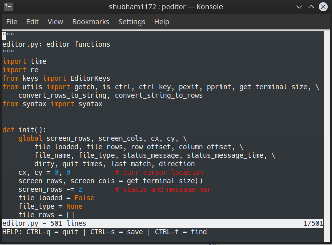

|
I am a Software Engineer at Microsoft, currently working on Common Data Service, a business application platform to store and manage data. I graduated in Computer Science and Engineering from Vellore Institute of Technology in 2020. I previously interned at Gmetri, an extended reality start-up, where I wrote a Content Delivery Network to deliver images with on-the-fly transformations. My broad interests are distributed systems, and designing robust, highly scalable software. |
Publications
|
Gini index and entropy based evaluation: A retrospective study and proposal of evaluation method
for image segmentation.
NCCS 2018
[paper]
|
|
|
Eye state detection for use in advanced driver assistance systems
ICRTAC 2018
|
Side Projects
|
Visual Question Answering
VQA aims at a multi-layered understanding of pictures and allow answering questions in natural
language about the objects in it. A knowledge graph is generated out of entities, their
attributes and their relationships. It is then used to create a reading comprehension which
uses Microsoft’s R-NET to answer questions based on it.
[code]
|
|

|
Simple RISC Machine (SRM)
SRM is a Turing complete 16-bit RISC CPU based on the Von Neumann architecture. Inspired
by Albert Paul Malvino's SAP processor and Ben Eater's 8-bit computer, SRM is a simulation
in Logisim. Its assembler is written in Python.
|
|  |
Peditor
Peditor is a lightweight text editor. It supports syntax highlighting.
[code]
|